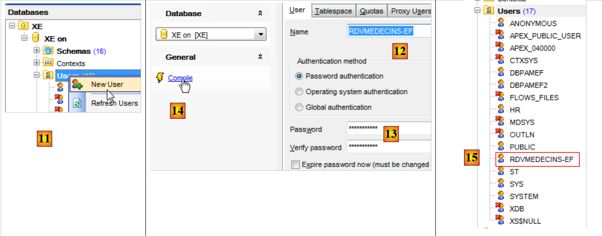
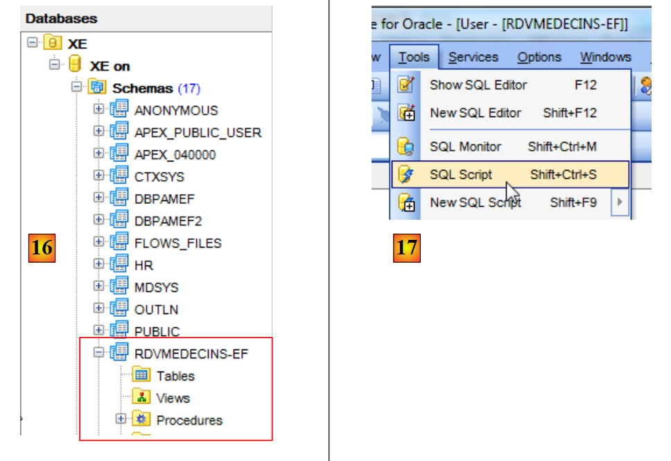
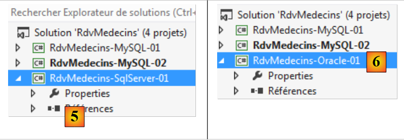
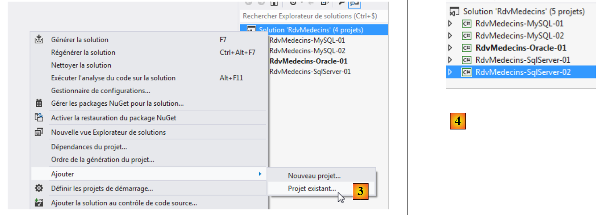

5. Case Study with Oracle Database Express Edition 11g Release 2
5.1. Installing the tools
The tools to be installed are as follows:
- the DBMS: [http://www.oracle.com/technetwork/products/express-edition/downloads/index.html];
- an administration tool: EMS SQL Manager for Oracle Freeware [http://www.sqlmanager.net/fr/products/oracle/manager/download];
- an Oracle client for .NET: ODAC 11.2 Release 5 (11.2.0.3.20) with Oracle Developer Tools for Visual Studio: [http://www.oracle.com/technetwork/developer-tools/visual-studio/downloads/index.html].
In the following examples, the user "system" has the password "system".
Launch Oracle [1] and then the [SQL Manager Lite for Oracle] tool, which we will use to administer the DBMS [2].
 |
- In [3], we connect to an existing database;
 |
- In [4], we use the Oracle XE service to connect;
- in [5], we specify the name of the XE database;
- in [6], we log in as system/system;
- In [7], we finish the wizard;
 |
- in [8], we connect to the database;
- In [9], we are connected;
- Since we logged in as the system / system user, who has extended privileges, we can, for example, manage users [10];
 |
- In [11], create a new user;
- in [12], the user will be named [RDVMEDECINS-EF];
- in [13], and will have the password rdvmedecins;
- In [14], the user creation is confirmed;
- in [15], the user has been created;
 |
- in [16], the user [RDVMEDECINS-EF] is also a database schema;
- in [17], the user as created does not have sufficient permissions. We grant them via an SQL script;
 |
- in [18], the script is executed;
- in [19], we will try to log in as [RDVMEDECINS-EF] to see what they can do. To do this, we start by registering a new database in [EMS Manager];
 |
- in [19], we log in via the XE service;
- in [20], we log in as RDVMEDECINS-EF / rdvmedecins;
- In [21], we assign an alias that reflects the name of the logged-in user;
- in [22], we connect to Oracle using the provided credentials;
 |
 |
- In [22], we successfully logged in;
- In [23], we attempt to create a table in the [RDVMEDECINS-EF] schema;
- in [24], we define a table;
- In [25], we validate its definition;
 |
- In [26], the table has been created. We delete it;
- In [27], it has been deleted.
Now that we have a user with sufficient permissions, we will create the VS 2012 project that will create the tables in the [RDVMEDECINS-EF] schema based on the entity definitions.
5.2. Creating the database from the entities
We start by duplicating the [RdvMedecins-SqlServer-01] project folder into [RdvMedecins-Oracle-01] [1]:
 |
- in [2], in VS 2012, we remove the [RdvMedecins-SqlServer-01] project from the solution;
 |
- in [3], the project has been removed;
- in [4], we add another one. This one is taken from the [RdvMedecins-Oracle-01] folder that we created earlier;
 |
- in [5], the loaded project is named [RdvMedecins-SqlServer-01];
- in [6], we change its name to [RdvMedecins-Oracle-01]
 |
- in [7], we add another project to the solution. This one is taken from the [RdvMedecins-SqlServer-01] folder of the project we previously removed from the solution;
- in [8], the [RdvMedecins-SqlServer-01] project has been re-added to the solution.
The [RdvMedecins-Oracle-01] project is identical to the [RdvMedecins-SqlServer-01] project. We need to make a few changes. In [App.config], we will modify the connection string and the [DbProviderFactory], which must be adapted to each DBMS.
<!-- database connection string -->
<connectionStrings>
<add name="myContext" connectionString="Data Source=(DESCRIPTION=(ADDRESS_LIST=(ADDRESS=(PROTOCOL=TCP)(HOST=localhost)(PORT=1521)))(CONNECT_DATA=(SERVER=DEDICATED)(SERVICE_NAME=XE)));User Id=RDVMEDECINS-EF;Password=rdvmedecins;" providerName="Oracle.DataAccess.Client" />
</connectionStrings>
<!-- the factory provider -->
<system.data>
<DbProviderFactories>
<remove invariant="Oracle.DataAccess.Client" />
<add name="Oracle Data Provider for .NET" invariant="Oracle.DataAccess.Client" description="Oracle Data Provider for .NET" type="Oracle.DataAccess.Client.OracleClientFactory, Oracle.DataAccess, Version=4.112.3.0, Culture=neutral, PublicKeyToken=89b483f429c47342" />
</DbProviderFactories>
</system.data>
- line 3: the username and password;
- lines 6–11: the DbProviderFactory. Line 9 references a DLL [Oracle.DataAccess] that we don’t have. We can get it using NuGet [1]:
 |
- in [2], type the keyword "oracle" in the search box;
- in [3], select the appropriate package [Oracle Data Provider]. This is Oracle’s ADO.NET connector;
 |
- in [4], the reference is added;
- in [5], in [App.config], you must specify the correct version of the DLL. You can find it in its properties.
In the [Entities.cs] file, you must adapt the schema of the tables that will be generated. The schema used is the name of the user who owns the tables.
[Table("DOCTORS", Schema = "RDVDOCTORS-EF")]
public class Doctor : Person
{...}
[Table("CLIENTS", Schema = "RDVMEDECINS-EF")]
public class Client : Person
{...}
[Table("RVS", Schema = "RDVMEDECINS-EF")]
public class Appointment
{...}
[Table("SLOTS", Schema = "RDVMEDECINS-EF")]
public class Slot
{...}
We configure the project build:
 |
- in [1], we give a different name to the assembly that will be generated;
- in [2], we also specify a different default namespace;
- in [3], we specify the program to run.
At this stage, there are no compilation errors. Let’s run the [CreateDB_01] program. We get the following exception:
We recall having encountered the same error with MySQL. This is related to the type of the Timestamp field in the entities. We make the same modification. In the entities, we replace the three lines
[Column("TIMESTAMP")]
[Timestamp]
public byte[] Timestamp { get; set; }
with the following:
[ConcurrencyCheck]
[Column("VERSIONING")]
public int? Versioning { get; set; }
We are therefore changing the column type from byte[] to int?. Recall that for both SQL Server and MySQL, the table column used to manage access concurrency was assigned a value by the DBMS each time a row was inserted or modified. From now on, we will use an entity field that is an integer. In the DBMS, we will use stored procedures to increment this integer by one each time a row is inserted or modified.
We make the above change for all four entities and then rerun the application. We then get the following error:
Line 1 indicates that the Oracle ADO.NET connector is unable to delete the existing database. Let’s review what is happening. The code in [CreateDB_01.cs] is as follows:
using System;
using System.Data.Entity;
using RdvMedecins.Models;
namespace RdvMedecins_01
{
class CreateDB_01
{
static void Main(string[] args)
{
// Create the database
Database.SetInitializer(new RdvMedecinsInitializer());
using (var context = new RdvMedecinsContext())
{
context.Database.Initialize(false);
}
}
}
}
Line 15 triggers the execution of the [RdvMedecinsInitializer] class (line 12). This class is as follows:
public class RdvMedecinsInitializer : DropCreateDatabaseAlways<RdvMedecinsContext>
It derives from the [DropCreateDatabaseAlways] class, which attempts to drop and then recreate the database. We change the class definition to:
public class RdvMedecinsInitializer : CreateDatabaseIfNotExists<RdvMedecinsContext>
The database is created only if it does not exist. We rerun [CreateDB_01.cs] and there are no more errors. But in [EMS Manager], we see that the [RDVMEDECINS-EF] database remains empty. Because EF 5 found an existing database, it did nothing. It only takes action if the database does not exist. From there, we’re stuck in a loop. In fact, the connection string to the DBMS is as follows:
<connectionStrings>
<add name="myContext" connectionString="Data Source=(DESCRIPTION=(ADDRESS_LIST=(ADDRESS=(PROTOCOL=TCP)(HOST=localhost)(PORT=1521)))(CONNECT_DATA=(SERVER=DEDICATED)(SERVICE_NAME=XE)));User Id=RDVMEDECINS-EF;Password=rdvmedecins;" providerName="Oracle.DataAccess.Client" />
</connectionStrings>
Line 2: The connection string uses a user name rather than a database name. This user must exist.
We must therefore manually create the [RDVMEDECINS-EF] database using the [EMS Manager for Oracle] tool. We will not describe every step, but only the most important ones.
The Oracle database will be as follows:
The tables
 |
The various tables have the primary and foreign keys that these same tables had in the two previous examples. The foreign keys specifically have the ON DELETE CASCADE attribute.
Sequences
We have created Oracle sequences here. These are generators of consecutive numbers. There are 5 of them [1].
 |
- In [2], we see the properties of the [SEQUENCE_CLIENTS] sequence. It generates consecutive numbers in increments of 1, starting from 1 up to a very large value.
All sequences are built on the same model.
- [SEQUENCE_CLIENTS] will be used to generate the primary key for the [CLIENTS] table;
- [SEQUENCE_DOCTORS] will be used to generate the primary key for the [DOCTORS] table;
- [SEQUENCE_SLOTS] will be used to generate the primary key for the [SLOTS] table;
- [SEQUENCE_RVS] will be used to generate the primary key for the [RVS] table;
- [SEQUENCE_VERSIONS] will be used to generate the values for the [VERSIONING] columns in all tables.
Triggers
A trigger is a procedure executed by the DBMS before or after an event (Insert, Update, Delete) in a table. We have 8 of them [1]:
 |
Let’s look at the DDL code for the [TRIGGER_PK_CLIENTS] trigger, which populates the primary key of the [CLIENTS] table:
- Lines 1-5: Before each INSERT operation on the [CLIENTS] table;
- line 6: the [ID] column will take the next value from the [SEQUENCE_CLIENTS] sequence. The primary key will thus have consecutive values provided by the sequence.
The triggers [TRIGGER_PK_MEDECINS, TRIGGER_PK_CRENEAUX, TRIGGER_PK_RVS] work in a similar way.
Let’s look at the DDL code for the trigger [TRIGGER_VERSIONS_CLIENTS], which populates the [VERSIONING] column of the [CLIENTS] table:
- Lines 1-2: Before each INSERT or UPDATE operation on the [CLIENTS] table;
- line 8: the [VERSIONING] column will take the next value from the [SEQUENCE_VERSIONS] sequence. The [VERSIONING] column will thus have consecutive values provided by the sequence.
The triggers [TRIGGER_VERSION_MEDECINS, TRIGGER_VERSION_CRENEAUX, TRIGGER_VERSION_RVS] work in a similar way. The four [VERSIONING] columns derive their values from the same sequence.
The script for generating the Oracle database tables [RDVMEDECINS-EF] has been placed in the folder [RdvMedecins / databases / oracle]. The reader can load and run it to create the tables.
Once this is done, the various programs in the project can be run. They produce the same results as with SQL Server, except for the [ModifyDetachedEntities] program, which crashes for the same reason it crashed with MySQL. The problem is resolved in the same way. Simply copy the [ModifyDetachedEntities] program from the [RdvMedecins-MySQL-01] project into the [RdvMedecins-Oracle-01] project. This then presents a new problem:
- lines 1–4: the detached client was successfully updated;
- line 6: a known exception. This is the one you get when you try to modify an entity without having the correct version. However, in this case, we did not want to modify but rather delete the entity:
// delete entity out of context
using (var context = new RdvMedecinsContext())
{
// here, we have a new empty context
// we set client1 in the context to a deleted state
context.Entry(client1).State = EntityState.Deleted;
// we save the context
context.SaveChanges();
}
EF 5 refused to delete client1 from the database because client1 (line 6) did not have the same version. We had not encountered this problem with MySQL. We are gradually realizing that the ADO.NET connectors for different DBMSs have slight differences. We correct it as follows:
using (var context = new RdvMedecinsContext())
{
// here, we have a new empty context
// we add client1 to the context to delete it
context.Clients.Remove(context.Clients.Find(client1.Id));
// we save the context
context.SaveChanges();
}
and it works.
5.3. Multi-layer architecture based on EF 5
Let’s return to our case study described in paragraph 2 on page 7.
 |
We will start by building the [DAO] data access layer. To do this, we duplicate the VS 2012 console project [RdvMedecins-SqlServer-02] into [RdvMedecins-Oracle-02] [1]:
 |
- in [2], we delete the [RdvMedecins-SqlServer-02] project;
 |
- in [3], we add an existing project to the solution. We take it from the [RdvMedecins-Oracle-02] folder that was just created;
- in [4], the new project has the same name as the one that was deleted. We will change its name;
 |
- In [5], we have changed the project name;
- In [6], we modify some of its properties, such as the assembly name here;
- in [7], the [Models] folder is deleted and replaced by the [Models] folder from the [RdvMedecins-Oracle-01] project. This is because the two projects share the same models.
 |
- in [8], the project's current references;
- in [9], the Oracle ADO.NET connector has been added using the NuGet tool.
In the [App.config] file, replace the SQL Server database information with that of the Oracle database. This information can be found in the [App.config] file of the [RdvMedecins-Oracle-01] project:
<!-- database connection string -->
<connectionStrings>
<add name="myContext" connectionString="Data Source=(DESCRIPTION=(ADDRESS_LIST=(ADDRESS=(PROTOCOL=TCP)(HOST=localhost)(PORT=1521)))(CONNECT_DATA=(SERVER=DEDICATED)(SERVICE_NAME=XE)));User Id=RDVMEDECINS-EF;Password=rdvmedecins;" providerName="Oracle.DataAccess.Client" />
</connectionStrings>
<!-- the factory provider -->
<system.data>
<DbProviderFactories>
<remove invariant="Oracle.DataAccess.Client" />
<add name="Oracle Data Provider for .NET" invariant="Oracle.DataAccess.Client" description="Oracle Data Provider for .NET" type="Oracle.DataAccess.Client.OracleClientFactory, Oracle.DataAccess, Version=4.112.3.0, Culture=neutral, PublicKeyToken=89b483f429c47342" />
</DbProviderFactories>
</system.data>
The objects managed by Spring also change. Currently we have:
<!-- Spring configuration -->
<spring>
<context>
<resource uri="config://spring/objects" />
</context>
<objects xmlns="http://www.springframework.net">
<object id="rdvmedecinsDao" type="RdvMedecins.Dao.Dao,RdvMedecins-SqlServer-02" />
</objects>
</spring>
Line 7 references the assembly for the [RdvMedecins-SqlServer-02] project. The assembly is now [RdvMedecins-Oracle-02].
With that done, we are ready to run the [DAO] layer test. First, we must ensure the database is populated (using the [Fill] program from the [RdvMedecins-Oracle-01] project). The test program runs successfully.
We create the project’s DLL as we did for the [RdvMedecins-SqlServer-02] project and gather all the project’s DLLs into a [lib] folder created within [RdvMedecins-Oracle-02]. These will be the references for the [RdvMedecins-Oracle-03] web project that follows.
 |
We are now ready to build the [ASP.NET] layer of our application:
 |
We will start with the [RdvMedecins-SqlServer-03] project. We duplicate this project’s folder into [RdvMedecins-Oracle-03] [1]:
 |
- in [2], using VS 2012 Express for the Web, we open the solution in the [RdvMedecins-Oracle-03] folder;
- in [3], we change both the solution name and the project name;
 |
- in [4], the project's current references;
- in [5], we delete them;
- in [6], to replace them with references to the DLLs we just stored in a [lib] folder within the [RdvMedecins-Oracle-02] project.
All that remains is to modify the [Web.config] file. We replace its current content with the content of the [App.config] file from the [RdvMedecins-Oracle-02] project. Once this is done, we run the web project. It works. We must not forget to populate the database before running the web application.